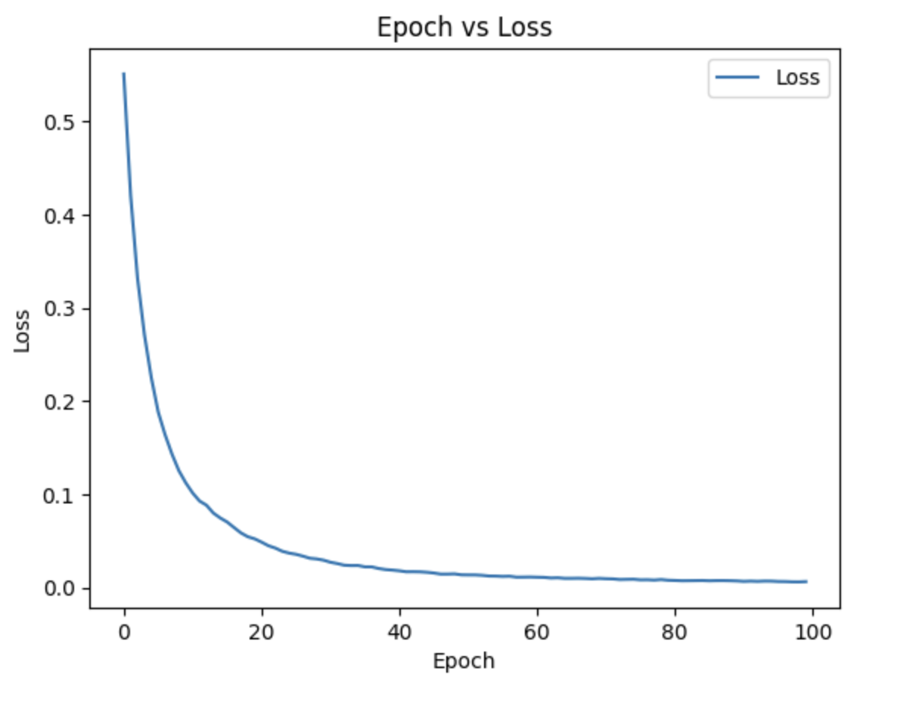
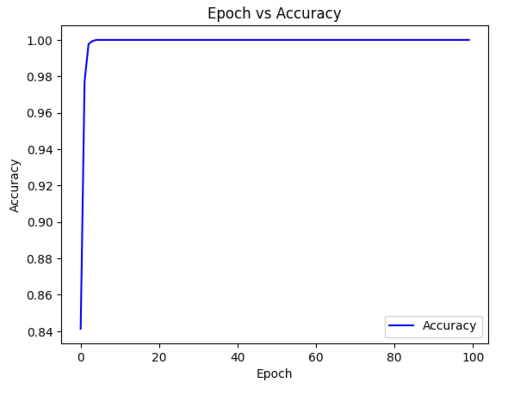

Classify Snoring using in RNN on TIHM Dementia Data
In the United States, there are nearly seven million prople living with Alzheimer's Disease. The cost of care is nearly $360 billion.
The TIHM project originates in England and is an open dataset for remote healthcare monitoring in dementia patients. It monitors patients in their homes using low-cost Internet of Things (IoT) sensing technologies. The sensing technologies collect vital signs and sleep patterns of patients in various rooms of their homes. The patients had to be 50 years old with a verified diagnosis of dementia. There was sleep data for 17 participants. On average each participant was involved in the study for about 50 days.
The data is time-series data, so I used an Recurrent Neural Network (RNN) to classify patients as snoring or not. I am interested in snoring information because there have been interest in snoring or not snoring data for patients with dementia. The results of the
analysis can be found in the following workbook:
Analysis Workbook
Dataset Overview
The sleep data in the TIHM project is a large dataset with 461,423 cases and 6 variables. I samples 1% of the data resulting in 4,614 cases. I selected two feautres of interest - heart rate and respiratory rate. The sample had coverage of the population because the average of the features were similar in both the sample and the population.
Data Analysis: RNN Model
The RNN model had a hidden size of 32 and used binary classification to classify patients as snoring or not. I trained on 100 epochs and calculated the loss values and the accuracy values during training.

The Loss function declines from 0.64 to 0.16 by the hundredth epoch. This is a great loss value as it is close to 0.

The accuracy during training remains at 96% which is great because it is close to 100%. Accuracy is the degree of correctness of the result. The model is highly accurate, despite only having two features.
Evaluate the Model
The test set has a test loss of 0.7 and a test accuracy of 96%. Both of these values are good as the loss is close to zero and the accuracy is close to 100%.
References:
https://www.alz.org/alzheimers-dementia/facts-figures?utm_source=google&utm_medium=paidsearch&utm_campaign=google_grants&utm_content=dementia&gad_source=1&gclid=Cj0KCQjwv_m-BhC4ARIsAIqNeBsulXOXU7h0VrVwac-pOejOk9lA0gqE24ZpowIUu3TYi-HZanV6ylEaAoE4EALw_wcB
Palermo F. et al. TIHM: An open dataset for remote healthcare monitoring in dementia. Nature. 2023.
Gaggi N. et al. Role of subjective snoring in dementia risk. Oxford Sleep Research Society. 2025.
Yaqing G. et al. Snoring and risk of dementia: a prospective cohort and Mendelian randomization study. 2023.